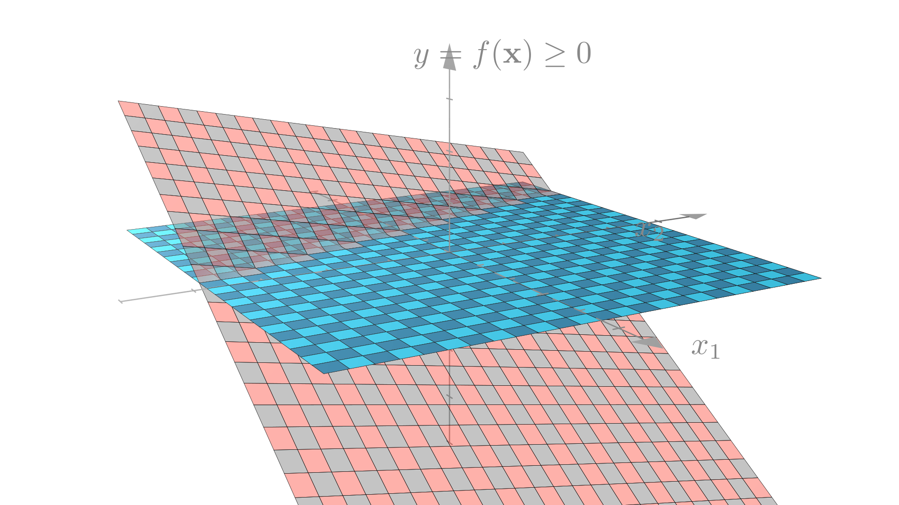

Plot = import("https://esm.sh/@observablehq/plot")
d3 = require("d3@7")
topojson = require("topojson")
MathJax = require("https://cdnjs.cloudflare.com/ajax/libs/mathjax/3.2.2/es5/tex-svg.min.js").catch(() => window.MathJax)
tf = require("https://cdn.jsdelivr.net/npm/@tensorflow/tfjs@latest/dist/tf.min.js").catch(() => window.tf)
THREE = {
const THREE = window.THREE = await require("three@0.130.0/build/three.min.js");
await require("three@0.130.0/examples/js/controls/OrbitControls.js").catch(() => {});
await require("three@0.130.0/examples/js/loaders/SVGLoader.js").catch(() => {});
return THREE;
}
function sample(f, start, end, nsamples=100) {
let arr = [...Array(nsamples).keys()]
let dist = end - start
function arrmap(ind) {
const x = (ind * dist) / nsamples + start;
return [x, f(x)];
}
return arr.map(arrmap)
}
function sigmoid(x){
return 1 / (1 + Math.exp(-x));
}
function sum(x) {
let s = 0;
for (let i = 0; i < x.length; i++ ) {
s += x[i];
}
return s;
}
function mean(x) {
let s = 0;
for (let i = 0; i < x.length; i++ ) {
s += x[i];
}
return s / x.length;
}
function cross_ent(x, y) {
return y ? -Math.log(sigmoid(x)) : -Math.log(sigmoid(-x));
}
function se(x, y) {
return (x - y) * (x - y);
}
function shuffle(array) {
let currentIndex = array.length, randomIndex;
// While there remain elements to shuffle.
while (currentIndex > 0) {
// Pick a remaining element.
randomIndex = Math.floor(Math.random() * currentIndex);
currentIndex--;
// And swap it with the current element.
[array[currentIndex], array[randomIndex]] = [
array[randomIndex], array[currentIndex]];
}
return array;
}
function acc(x, y) {
return Number(y == (x > 0));
}
function grid_func(f, width, height, x1, y1, x2, y2) {
let values = new Array(width * height);
const xstride = (x2 - x1) / width;
const ystride = (y2 - y1) / height;
let y = 0;
let x = 0;
let ind = 0;
for (let i = 0; i < height; i++ ) {
for (let j = 0; j < width; j++, ind++) {
x = x1 + j * xstride;
y = y1 + i * ystride;
values[ind] = f(x, y);
}
}
return {width: width, height: height, x1: x1, y1: y1, x2: x2, y2: y2, values: values};
}
function get_accessors(keys, byindex=false) {
let isString = value => typeof value === 'string';
let index = 0;
let indexmap = {};
let accessors = [];
for (let i = 0; i < keys.length; i++){
let k = keys[i];
if (Array.isArray(k)) {
let access = isString(k[0]) ? (x => x[k[0]]) : k[0];
if (byindex) {
if (isString(k[0]) && !(k[0] in indexmap)) {
indexmap[k[0]] = index;
index++;
}
let accessindex = indexmap[k[0]];
access = x => x[accessindex];
let process = k[1];
let final_access = x => process(access(x));
accessors.push(final_access);
}
else {
let process = k[1];
let final_access = x => process(access(x));
accessors.push(final_access);
}
}
else {
let access = isString(k) ? (x => x[k]) : k;
if (byindex) {
if (isString(k) && !(k in indexmap)) {
indexmap[k] = index;
index++;
}
let accessindex = indexmap[k];
access = x => x[accessindex];
}
accessors.push(access);
}
}
return accessors;
}
function predict(obs, weights, keys=["0", "1", "2", "3"], byindex=false) {
let isString = value => typeof value === 'string';
let accessors = get_accessors(keys, byindex);
let output = weights[0];
let wi = 1;
for (let i = 0; (i < keys.length) && (wi < weights.length); i++, wi++){
output += weights[wi] * accessors[i](obs);
}
return output;
}
function mean_loss(f, data, weights, keys, label, l2=0) {
let reg = 0;
if (l2 > 0){
for (let i = 1; i < weights.length; i++) {
reg += weights[i] * weights[i];
}
}
const isString = value => typeof value === 'string';
const get_label = isString(label) ? (x => x[label]) : label;
return mean(data.map(x => f(predict(x, weights, keys), get_label(x)))) + l2 * reg;
}
function get_domains(data, accessors, margin=0.1) {
let domains = [];
for (let i = 0; i < accessors.length; i++){
let xdomain = d3.extent(data, accessors[i]);
let xdsize = (xdomain[1] - xdomain[0]);
let xmin = xdomain[0] - xdsize * margin;
let xmax = xdomain[1] + xdsize * margin;
domains.push([xmin, xmax]);
}
return domains;
}
function logisticPlot2d(data, weights, keys, label, interval=0.05) {
const accuracy = mean_loss(acc, data, weights, keys, label);
let isString = value => typeof value === 'string';
let accessors = get_accessors(keys);
let index_accessors = get_accessors(keys, true);
let domains = get_domains(data, accessors);
const get_label = isString(label) ? (x => x[label]) : label;
return Plot.plot({
x: {tickSpacing: 80, label: "x"},
y: {tickSpacing: 80, label: "y"},
title: "Accuracy: " + accuracy.toFixed(3),
color: {type: "linear", legend: true, scheme: "BuRd", domain: [-0.5, 1.5]},
marks: [
Plot.contour({
fill: (x, y) => sigmoid(predict([x, y], weights, index_accessors)),
x1: domains[0][0], y1: domains[1][0], x2: domains[0][1], y2: domains[1][1], interval: interval,
}),
Plot.dot(data, {x: accessors[0], y: accessors[1], stroke: x=> (get_label(x) ? 1.35 : -0.35)})
]
});
}
function logisticLossPlot2d(data, weights, keys, label) {
const loss = mean_loss(cross_ent, data, weights, keys, label);
let isString = value => typeof value === 'string';
let accessors = get_accessors(keys);
let index_accessors = get_accessors(keys, true);
let domains = get_domains(data, accessors);
const get_label = isString(label) ? (x => x[label]) : label;
return Plot.plot({
x: {tickSpacing: 80, label: "x"},
y: {tickSpacing: 80, label: "y"},
title: "Loss: " + loss.toFixed(3),
color: {type: "linear", legend: true, scheme: "BuRd", domain: [0, 5]},
marks: [
Plot.contour({
value: (x, y) => predict([x, y], weights, index_accessors),
fillOpacity: 0.2,
stroke: "black", x1: domains[0][0], y1: domains[1][0], x2: domains[0][1], y2: domains[1][1],
thresholds: [-1e6, 0, 0.00001]
}),
Plot.dot(data, {x: accessors[0], y: accessors[1], stroke: x=> cross_ent(predict(x, weights, keys), get_label(x)),
strokeOpacity: 0.5 })
]
});
}
function lossPlot2d(f, data, keys, label, l2=0, res=100, x1=-40, y1=-0.015, x2=40, y2=0.015, vmax=50, nlines=25, ctype="sqrt", scale=(x => x)) {
let grid = 0;
function lossFunc(w, b) {
return scale(mean_loss(f, data, [w, b], keys, label, l2));
}
grid = grid_func(lossFunc,
res, res, x1, y1, x2, y2
);
function plot2d(weights) {
let w = weights;
if (!(Array.isArray(w[0]))){
w = [w];
}
var arrows = w.slice(0, w.length - 1).map(function(e, i) {
return e.concat(w[i+1]);
});
let interval= vmax / nlines;
let thresholds = [];
for (let i = 0; i < nlines; i++) {
thresholds.push(i * interval);
}
let loss = mean_loss(f, data, w[w.length - 1], keys, label, l2)
return Plot.plot({
title: "Loss: " + loss.toFixed(3),
color: {type: "linear", legend: true, label: "Loss", scheme: "BuRd", domain: [0, vmax], type: ctype},
marks: [
Plot.contour(grid.values, {width: grid.width, height: grid.height, x1: grid.x1, x2:grid.x2, y1: grid.y1, y2: grid.y2,
stroke: Plot.identity, thresholds: thresholds}),
Plot.dot(w),
Plot.arrow(arrows, {x1: "0", y1: "1", x2: "2", y2: "3", stroke: "black"})
]
})
}
return plot2d;
}
function regressionPlot(data, weights, keys, label, l2, f=se, stroke="") {
let loss = mean_loss(f, data, weights, keys, label, l2);
let isString = value => typeof value === 'string';
let accessors = get_accessors(keys);
let index_accessors = get_accessors(keys, true);
let domains = get_domains(data, get_accessors([label].concat(keys)));
const get_label = isString(label) ? (x => x[label]) : label;
let stroke_shade = stroke;
if (stroke == "") {
stroke_shade = (x => f(predict(x, weights, keys), get_label(x)))
}
return Plot.plot({
y: {domain: domains[0]},
title: "Loss: " + loss.toFixed(3),
color: {type: "linear", legend: true, label: "Loss", scheme: "BuRd", domain: [0, 100]},
marks: [
Plot.line(sample((x) => predict([x], weights, index_accessors), domains[1][0], domains[1][1]), {stroke: 'black'}),
Plot.dot(data, {x: accessors[0], y: get_label, stroke: stroke_shade })
]
})
}Lecture 4: Feature transforms
Evaluating models
Training and test datasets
In machine learning we are typically less interested in how our model predicts the data weve already seen than we are in how well it makes predictions for new data. One way to estimate how well our model our model will generalize to new data is to hold out data while fitting our model. To do this we will split our dataset into two smaller datasets: a training dataset that we will use to fit our model, and a test or held-out dataset that we will only use to evaluate our model. By computing the loss on this test dataset, we can get a sense of how well our model will make prediction for new data.
\[\mathcal{D} = \{ (\mathbf{x}_1, y_1),\ (\mathbf{x}_2, y_2),\ ... \,(\mathbf{x}_N, y_N) \}\quad \longrightarrow \quad \]
\[ \mathcal{D}_{train} = \{ (\mathbf{x}_1, y_1),\ (\mathbf{x}_2, y_2),\ ... \,(\mathbf{x}_{Ntrain}, y_{Ntrain}) \},\ \mathcal{D}_{test} = \{ (\mathbf{x}_1, y_1),\ (\mathbf{x}_2, y_2),\ ... \,(\mathbf{x}_{Ntest}, y_{Ntest}) \} \]
Training data
| car name | weight | displacement | horsepower | acceleration | |
|---|---|---|---|---|---|
| 0 | chevrolet chevelle malibu | 3504 | 307.0 | 130 | 12.0 |
| 1 | buick skylark 320 | 3693 | 350.0 | 165 | 11.5 |
| 2 | plymouth satellite | 3436 | 318.0 | 150 | 11.0 |
| 3 | amc rebel sst | 3433 | 304.0 | 150 | 12.0 |
| 4 | ford torino | 3449 | 302.0 | 140 | 10.5 |
| ... | ... | ... | ... | ... | ... |
| 295 | dodge colt hatchback custom | 1915 | 98.0 | 80 | 14.4 |
| 296 | amc spirit dl | 2670 | 121.0 | 80 | 15.0 |
| 297 | mercedes benz 300d | 3530 | 183.0 | 77 | 20.1 |
| 298 | cadillac eldorado | 3900 | 350.0 | 125 | 17.4 |
| 299 | peugeot 504 | 3190 | 141.0 | 71 | 24.8 |
300 rows 5 columns
Test data
| car name | weight | displacement | horsepower | acceleration | |
|---|---|---|---|---|---|
| 300 | oldsmobile cutlass salon brougham | 3420 | 260.0 | 90 | 22.2 |
| 301 | plymouth horizon | 2200 | 105.0 | 70 | 13.2 |
| 302 | plymouth horizon tc3 | 2150 | 105.0 | 70 | 14.9 |
| 303 | datsun 210 | 2020 | 85.0 | 65 | 19.2 |
| 304 | fiat strada custom | 2130 | 91.0 | 69 | 14.7 |
| ... | ... | ... | ... | ... | ... |
| 393 | ford mustang gl | 2790 | 140.0 | 86 | 15.6 |
| 394 | vw pickup | 2130 | 97.0 | 52 | 24.6 |
| 395 | dodge rampage | 2295 | 135.0 | 84 | 11.6 |
| 396 | ford ranger | 2625 | 120.0 | 79 | 18.6 |
| 397 | chevy s-10 | 2720 | 119.0 | 82 | 19.4 |
98 rows 5 columns
For example, we might see that our model does well on the data it was fit on and poorly on new data.
Training data
Test data
Spliting data in practice
In general a good rule of thumb is to reserve \(30\%\) of you data for evaluation, but anywhere from \(10\%\) to \(50\%\) is common in practice.
It is also very import very important to split data at random. Often real-world data is stored in a meaningul order and we dont want this order to bias our results. In fact, the previous example was not split randomly. We see that if we do split randomly our evaluation looks much better.
Training data
Test data
In numpy we can accomplish this splitting by creating a random order of observations and applying it to both \(X\) and \(y\)
order = np.arange(X.shape[0]) # Get an array of indices (1...N)
numTrain = int(X.shape[0] * 0.7) # Get the number of training obs. (70%)
trainInds = order[:numTrain] # Get the indices of training obs. (70%)
testInds = order[numTrain:] # Get the indices of test obs. (30%)
# Get the data and labels for each split
trainX, trainy = X[trainInds], y[trainInds]
testX, testy = X[testInds], y[testInds]Feature Transforms
Linear predictions
In the previous two lectures, we looked at examples of linear models. For example, we saw that the linear regression model makes predictions of the form:
\[ f(\mathbf{x}) = \mathbf{x}^T\mathbf{w} = \sum_{i=1}^n x_i w_i \]
Meaning that the output will be a weighted sum of the features of the input. In the case of our car example, we will made predictions as:
\[ \text{Predicted MPG} = f(\mathbf{x})= \]
\[ (\text{weight})w_1 + (\text{horsepower})w_2 + (\text{displacement})w_3 + (\text{0-60mph})w_4 + b \]
Graphically we see this corresponds to a prediction function that is a line or a plane.
Non-linear data
Unfortunately, in the real world the relationship between inputs and outputs is not always linear. For example, what if we tried to fit a linear model to the following dataset.
We see that there is no straight line that is a good fit to our data. We see this with our real-world fuel efficiency dataset as well: we can find a line that reasonably approximates the relationship between weight and efficiency, but a curve would fit the data better.
Polynomial functions
If were trying to approximate a non-linear relationship between inputs and outputs, it follows that we may want to fit a non-linear approximation.
One of the simplest types of non-linear functions we could use are polynomial functions. A polynomial function is simply a function that can be expressed as a polynomial, meaning that it allows for (integer) powers of the input.
The simplest type of non-linear polynomial is a quadratic function, which involves powers of up to \(2\). A quadratic function of a single variable can be written as:
\[ f(x) = w_2 x^2 + w_1x +b \]
A quadratic function of \(2\) variables can be written as:
\[ f(x, y) = w_5 x^2 + w_4y^2 + w_3 xy + w_2x + w_1y +b \]
Similarly a cubic function involves powers up to 3:
\[ f(x) = w_3 x^3 + w_2 x^2 + w_1x +b \]

In general the degree of a polynomial is the largest exponent in any term of the polynomial (or sum of exponents for terms involving more than 1 input). For example we can look at 2 different degree 4 polynomial functions:
\[ f(x, y) = 3 x^4 + 2 xy + y - 2 \]
\[ f(x, y) = -2 x^2y^2 + 2 x^3 + y^2 - 5 \]
Polynomial functions as vector functions
We can also write polynomial functions as vector-input functions. For example a quadratic function of two variables could be written as:
\[ f(\mathbf{x}) = w_5 x_2^2 + w_4x_1^2 + w_3 x_1 x_2 + w_2x_2 + w_1x_1 +b \]
From this form we see that a polynomial is a weighted sum of powers of \(\mathbf{x}\)! This means we could write a vector polynomial as a dot product between a weight vector and a vector containing all the powers of \(\mathbf{x}\):
\[ w_5 x_2^2 + w_4x_1^2 + w_3 x_1 x_2 + w_2x + w_1y +b = \begin{bmatrix} x_1 \\ x_2 \\ x_1 x_2 \\ x_1^2 \\ x_2^2 \\ 1 \end{bmatrix} \cdot \begin{bmatrix} w_1 \\ w_2 \\ w_3 \\ w_4 \\ w_5 \\ b \end{bmatrix} \]
Quadratic feature transforms
Lets consider the mapping from \(\mathbf{x}\) to powers of the elements of \(\mathbf{x}\). Well call this mapping \(\phi\):
\[ \begin{bmatrix} x_1 \\ x_2 \end{bmatrix}\underset{\phi}{\longrightarrow}\begin{bmatrix} x_1 \\ x_2 \\ x_1 x_2 \\ x_1^2 \\ x_2^2 \\ 1 \end{bmatrix} \]
In this quadratic example \(\phi\) is a non-linear function that maps vectors to vectors \((\mathbb{R}^2 \rightarrow \mathbb{R}^6)\). We call this a quadratic feature transform
\[ \phi(\mathbf{x}) = \begin{bmatrix} x_1 \\ x_2 \\ x_1 x_2 \\ x_1^2 \\ x_2^2 \\ 1 \end{bmatrix} \]
With this mapping we can our quadratic prediction function simply as:
\[ f(\mathbf{x})=\phi(\mathbf{x})^T \mathbf{w} \]
This is a linear function of \(\phi(\mathbf{x})\) and \(\mathbf{w}\)!
As a simpler example, lets look at the case where our input has only a single element \((x_1)\).
\[ f(\mathbf{x})=\phi(\mathbf{x})^T \mathbf{w} = w_2 x_1^2 + w_1x_1 +b, \quad \phi(\mathbf{x}) = \begin{bmatrix} x_1 \\ x_1^2 \\ 1 \end{bmatrix} \]
Fitting quadratic regression
If we treat \(\phi(\mathbf{x})\) as our new set of inputs, we see that we can apply all the same tools of linear regression that we learned before. Again our new prediction function is:
\[ f(\mathbf{x})=\phi(\mathbf{x})^T \mathbf{w}, \quad \phi(\mathbf{x}) = \begin{bmatrix} x_1 \\ x_2 \\ x_1 x_2 \\ x_1^2 \\ x_2^2 \\ 1 \end{bmatrix} \]
We can then define a quadratic probabilistic model as:
\[ y_i \sim \mathcal{N}\big(\phi(\mathbf{x}_i)^T\mathbf{w}, \sigma^2\big) \]
The corresponding negative log-likelihood loss becomes
\[ \textbf{Loss}(\mathbf{w})=\textbf{NLL}(\mathbf{w}, \mathbf{X}, \mathbf{y})=- \sum_{i=1}^N \log p(y_i \mid \mathbf{x}_i, \mathbf{w}) \]
\[ = \frac{1}{2\sigma^2} \sum_{i=1}^N\big(y_i - \phi(\mathbf{x}_i)^T\mathbf{w}\big)^2 + N \log \sigma \sqrt{2 \pi} \]
We can now find the optimal \(\mathbf{w}\) by once again minimizing this loss!
\[ \mathbf{w}^* = \underset{\mathbf{w}}{\text{argmin}} \textbf{NLL}(\mathbf{w}, \mathbf{X}, \mathbf{y}) \]
We see that the gradient doesnt change, it simply involves \(\phi(\mathbf{x}_i)\) instead of \(\mathbf{x}_i\).
\[ \nabla_{\mathbf{w}}\textbf{NLL}(\mathbf{w}, \mathbf{X}, \mathbf{y}) = \frac{1}{2\sigma^2}\sum_{i=1}^N \big(\phi(\mathbf{x}_i)^T\mathbf{w} - y_i\big)\phi(\mathbf{x}_i) \] This is because we are only taking the gradient with respect to \(\mathbf{w}\). From the perspective of \(\mathbf{w}\), the prediction funciton is still linear.
Quadratic regression on real data
Lets look at our new quadratic regression model on the problem of predicting fuel efficiency from a cars weight. In this case because our input has only \(1\) entry our quadratic feature transform will be simpler:
\[ \begin{bmatrix} x_1 \end{bmatrix}\underset{\phi}{\longrightarrow}\begin{bmatrix} x_1 \\ x_1^2 \\ 1 \end{bmatrix} \]
Our prediction function will be:
\[ f(\mathbf{x})=\phi(\mathbf{x})^T \mathbf{w} = w_2 x_1^2 + w_1x_1 +b, \quad \phi(\mathbf{x}) = \begin{bmatrix} x_1 \\ x_1^2 \\ 1 \end{bmatrix} \]
We see that by varying \(w_2\), we can now fit a curve to our data and get a better overall loss!
Quadratic logistic regression
Just like with our regression example, we can apply our quadratic feature transform to the logistic regression model as well! In this case our prediction function becomes:
\[ f(\mathbf{x}) = \mathbb{I}(\phi(\mathbf{x})^T\mathbf{w} \geq 0), \quad \phi(\mathbf{x}) = \begin{bmatrix} x_1 \\ x_2 \\ x_1 x_2 \\ x_1^2 \\ x_2^2 \\ 1 \end{bmatrix} \]
Our Bernoulli probabilistic model becomes:
\[ y_i \sim \mathbf{Bernoulli}\big(\mathbf{ \sigma(\phi(\mathbf{x}_i)^T\mathbf{w} })\big), \quad p(y_i = 1\mid \mathbf{x}_i, \mathbf{w}) = \sigma\big(\phi(\mathbf{x}_i)^T\mathbf{w}\big) \]
The corresponding negative log-likelihood is:
\[ \mathbf{NLL}(\mathbf{w}, \mathbf{X}, \mathbf{y}) = -\sum_{i=1}^N \log\sigma\big((2y_i-1)\phi(\mathbf{x}_i)^T\mathbf{w}\big) \]
Which we can once again optimize with gradient descent.
With this approach our decision boundary is no longer restricted to be a line!
We can see where this circular decision boundary comes from if we think about the problem in 3-dimensions.
Recall that our linear classifier made predictions by thresholding a linear function. Our quadratic classifer thresholds a quadratic function of 1 or more variables, producing the curve that we see above.
Linear decision boundary

Quadratic decision boundary

General polynomial transforms
Weve now seen how to define quadratic models by defining a function \(\phi\) that maps inputs to new new inputs with quadratic terms. However were not restricted to just quadratic transform! For example, for a model with \(1\) input, we could definite a cubic feature transform as:
\[ \begin{bmatrix} x_1 \end{bmatrix}\underset{\phi}{\longrightarrow}\begin{bmatrix} x_1 \\ x_1^2 \\ x_1^3\\ 1 \end{bmatrix} \]
Our prediction function will be:
\[ f(\mathbf{x})=\phi(\mathbf{x})^T \mathbf{w} = w_3 x_1^3 + w_2 x_1^2 + w_1x_1 +b, \quad \phi(\mathbf{x}) = \begin{bmatrix} x_1 \\ x_1^2\\ x_1^3 \\ 1 \end{bmatrix} \]
We can apply this to our regression model for fuel efficiency as before.
We can also similarly define general polynomial transforms using polynomials of higher degrees. Note that the number of features in the transformed input grows very quickly with the degree of the polynomial and the number of original input features. Well often just use a subset of the possible polynomial terms in our transform. For example we might use only powers of individual elements (i.e. \(x_i^k\)) with out considering the cross terms (i.e. \(x_i^kx_j^p\)).
For example we might define the following quadratic transform for 3-feature inputs:
\[ \phi(\mathbf{x}) = \begin{bmatrix} x_1 \\ x_2 \\ x_3 \\ x_1^2\\ x_2^2 \\ x_3^2 \\ 1 \end{bmatrix} \]
General feature transforms
Its also not necessary to restrict ourselves to transforms defined by integer powers of the inputs. We can use any scalar non-linear functions we want. For example we could define a transform using \(\sin\) and \(\cos\):
\[ \phi(\mathbf{x}) = \begin{bmatrix} x_1 \\ x_2 \\ \sin(x_1) \\ \sin(x_2) \\ \cos(x_1) \\ \cos(x_2) \\ 1 \end{bmatrix} \]
Or using the sigmoid function:
\[ \phi(\mathbf{x}) = \begin{bmatrix} x_1 \\ x_2 \\ \sigma(x_1) \\ \sigma(x_2) \\ 1 \end{bmatrix} \]
We can see how different features allow us to define different nonlinear functions. In the example below well try the prediction function:
\[ f(\mathbf{x})=\phi(\mathbf{x})^T \mathbf{w} = w_3 e^{x_1} + w_2 \sin(x_1) + w_1x_1^2 +b ,\quad \phi(\mathbf{x}) = \begin{bmatrix} x_1 \\ x_1^2 \\ \sin(x_1) \\ e^{x_1} \\ 1 \end{bmatrix} \]
sin_X = np.sin(X) # sin(x)
squared_X = X ** 2 # x^2
exp_X = np.exp(X) # e^x
ones = np.ones((X.shape[0], 1)) # Column of 1s
transformedX = np.concatenate([X, squared_X, sin_X, exp_X, ones], axis=1)Kernel methods
On the board!